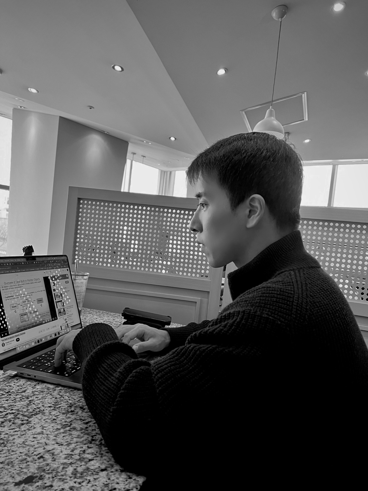

FLEXIBLE ENGINEER
Self-Motivated
Latest Post
{% assign latest_doc = site.wiki | sort: 'updated' | reverse | where: "public", true | first %} {% if latest_doc and latest_doc.title != 'wiki' %} {% endif %}Recently Changed Documents
-
{% assign documents = site.wiki | sort: 'updated' | reverse %}
{% for doc in documents limit: 10 %}
{% if doc.public == true and doc.title != 'wiki' %}
- {% endif %} {% endfor %}